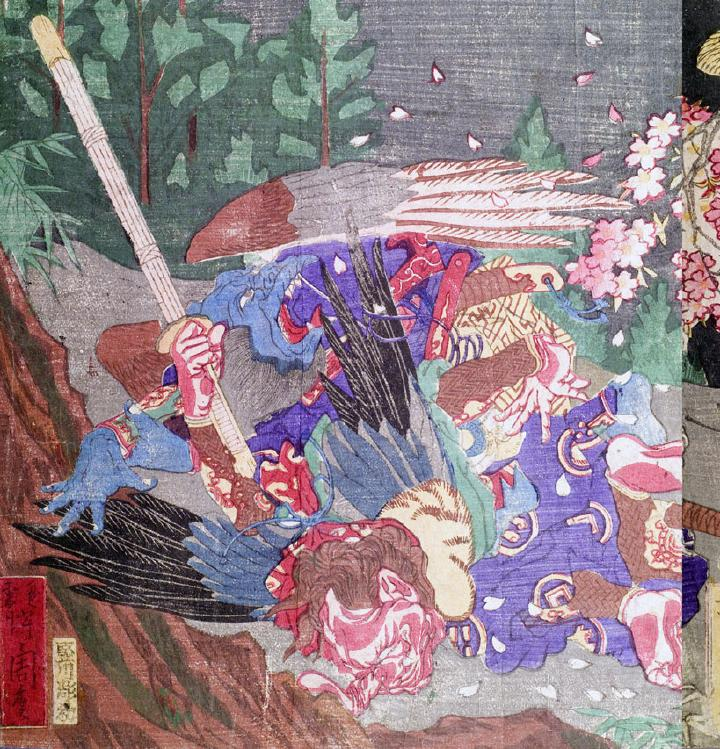

天狗。肌が赤く、髪は茶色い。藍色の袴を身に着け、肩に毛皮を掛けている。背に青色と黒色の翼を生やしている。引っくり返って顔を地につけており、長い鼻が折れているように見える。右手に竹刀を握り締めている。
著作者：猩々周麿（河鍋暁斎）／出典：親書誌：U426_nichibunken_0130：僧正坊と牛若丸；ソウショウボウトウシワカマル／日付：2009／資源識別子：U426_nichibunken_0130_0001_0007
Copyright (c)2010- International Research Center for Japanese Studies, Kyoto, Japan. All rights reserved.